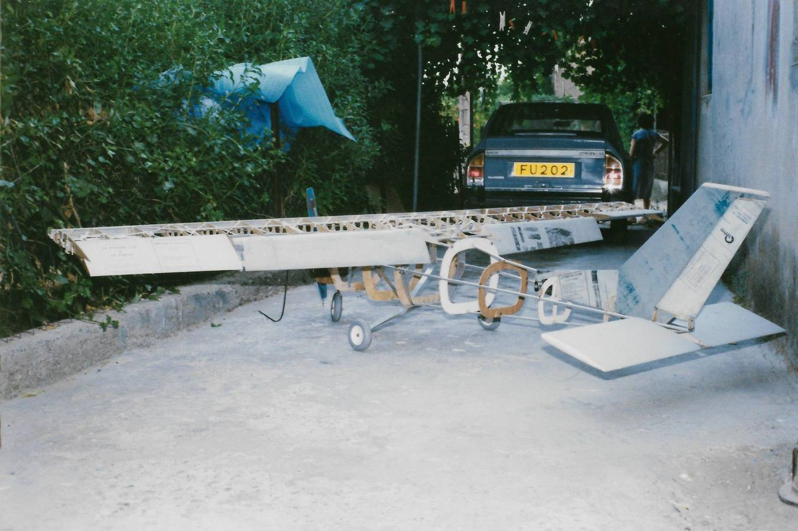

Cessna 177..
Cessna 177..

All the sections were drawn by curve, based on the three views and a photo of the real Cessna, which I found in a magazine in 1991. They were cut by hand with a hacksaw blade, from 4mm plywood. 10mm aluminum tube was used, as well as I-shaped aluminum for the fenders. The whole model was covered with aluminum sheets, which were used in printing presses for printing newspapers.

The berry was hammered into the required curved shape. Propeller, wheel bases, spinner are handmade except the wheels. I got them from the mother care store (from a baby store). It has flaps, scale all movable single piece stabilizer, two hoods which open from the transmitter, for filling with fuel the tank of the lawnmower, as well as for starting with a rope. Brakes were also made on the rear wheels.
The goggles and the pilots with the cockpit were big omissions, which were not done due to lack of time. They should be made for a more scale look.
Disadvantage is the one-piece wing that makes it very difficult to transport.
Model weight 18kg
Span 3m
Wing Area 1813.5 sq. in.
Wing loading 50.43 oz/sq.ft
Follow Louis Alexandrou on social media!